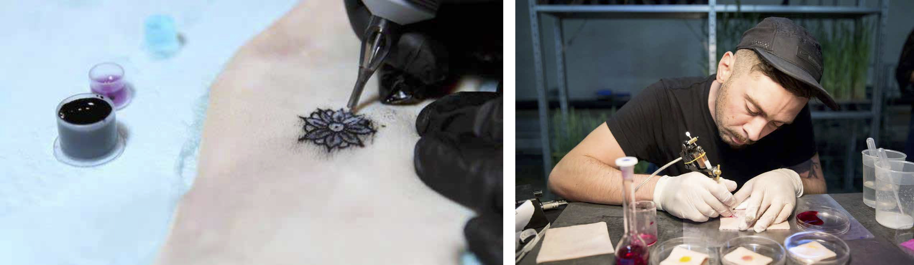
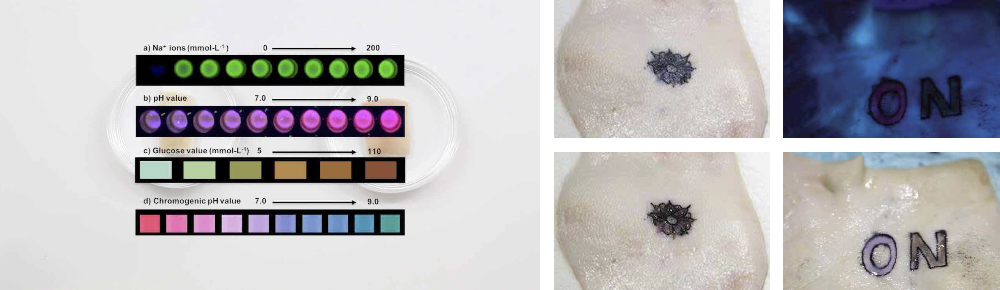
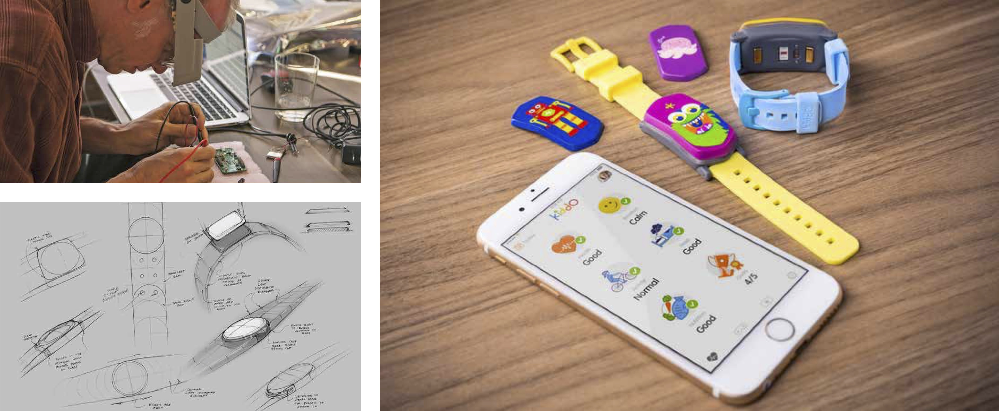
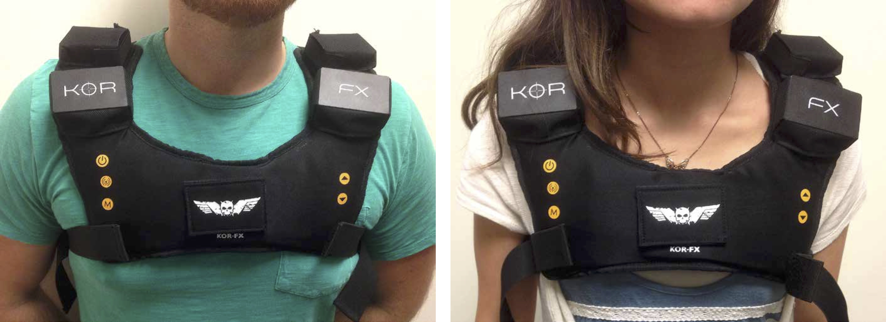

Wearable technology (in 2019) can include — but are not limited to — eyewear, smart textiles, smart key chains, smart tattoos, lifestyle devices, medical devices and other wearables. Designer and author of The Best Interface is No Interface, Golden Krishna, mentions that "our love affair with the digital interface is getting out of hand". In hopes to step away from the abundance of interfaces / screens, could wearables perhaps serve as a solution? After all, wearables are getting smaller, they are helping us with our health and safety as well as being fashionable. Nevertheless, there is a high likelihood that digital devices will become a part of us in the future. In the words of Elon Musk, "Humans must become cyborgs if they are to stay relevant in the future".
If this interests you, take a look at examples I found in my research, a mini conceptual assignment and my views on the topic.
Owing largely to the success of wearable fitness and sleep trackers such as Apple Watch, Nike Fuelband and Fitbit, there is a cultural phenomenon of Quantified Self. This is especially embraced in the health industry where “self-knowledge through numbers" is most valued by the community. Here are two such applications:
HEALTH INDUSTRY:
THE DERMAL ABYSS

For numerous people with diabetes, keeping tabs on blood sugar daily can be costly, time-consuming and invasive. The DermalAbyss project is the result of a collaboration between MIT and Harvard Medical School researchers. They explored a creative new approach that could help make things easier: biosensing tattoos. It blends advances in biotechnology with traditional methods in tattoo artistry.
They have developed a special tattoo ink that contains cheminals that can sense blood sugar levels, pH, and sodium. For instance, when blood sugar rises, the glucose sensing ink changes from blue to brown shown below. When a person's salt levels goes up, the sodium sensing ink becomes a more vibrant green under UV light. When alkaline levels tip, a pH sensor changes from purple to pink.

DermalAbyss is a proof-of-concept that presents a novel approach to bio-interfaces in which the body surface is rendered an interactive display. However, this is a research project, and there are currently no plans to develop Dermal Abyss as a product or to pursue clinical trials, according to
their site.
On the other hand, the 21st annual SXSW Interactive Innovation Awards honored DermalAbyss with the Scifi No Longer Award, given to "the coolest scientific achievement or discovery that before 2017 was only possible in science fiction".
Watch the following video to learn more about DermalAbyss:
This could potentially be used for medical diagnostics, quantified self and data encoding in the body. This could save diabetic patients from having to constantly prick their fingers to test their blood sugar. This could put the minds of its users at ease. Additionally, as this concept develops, doctors can identify existing issues easily and quickly. I find this interesting as diabetes runs in my family and I have seen first-hand the hassle around it. Hence, I am aware of the difference it can make to those affected.
KIDDO

Kiddo is a wearable smart band for kids that monitors your child’s health, activity, and sleep levels and sends you daily insights via the companion app. Kiddo is created under the notion that kids should be allowed to be kids and explore, learn and have fun - even in the age of televisions, gaming consoles and tablets. The Kiddo provides data and insights to back up a parent's instinct - giving you peace of mind that everything is ok and the knowledge that you’ll be alerted if it is not. There is a multitude of functionalities on the parents' companion application — some of which are shown below — that you can read more in
the campaign
on Kickstarter. Personally, I feel that arming children with such devices is more age-appropriate than phones and tablets.
Whilst the companion app is relatively detailed and well thought through, I am fascinated with the "kids karaoke" function. Based on motion of the child, it essentially turns the volume up on songs that are projected from the watch through a speaker. It can be further improved with more in-built games on the childrens' end like this karaoke function and possibly even a tracker system which will come in handy on outings (and take away the need for kids to possess mobile phones from a young age). Additionally, even though monitoring of the heart rate, steps, sleep and so on are not novel ideas anymore, it also tracks temperature, perspiration and emotional state. I found that the emotional state aspect , currently based on hourly data, can be further developed. Its applications can eventually even aid the mentally challenged in understanding, anticipating and controlling their mood.
— ★ —
Video games and wearable technology go well together. As such, some of the very first wearable technology concepts (that are still growing) emerged from gaming. The Power Glove and the Virtual Boy were both 1980s and early 1990s products that predicted Oculus Rift and gesture controlled devices.
GAMING INDUSTRY:
KOR-FX HAPTIC FEEDBACK VEST

The KOR-FX Haptic feedback vest is about creating the "feel" of being inside a virtual video game, so we can finally know what it feels like to be shot in the chest by an alien blaster. KOR-FX is an innovative vest (when it was introduced) that brings your fragile chest into the world of the video game. KOR-FX is not a rumble pack. Rumble packs use spinning motors to create vibrations. Its acousto-haptic technology uses audio to create precise, directed haptic output with special transducers. This output echoes into our chest cavity and turns our body into an instrument that allows us to feel the environment extremely accurately. As it is essentially of an audio device, it is works best in games with a lot of loud audio and shines when paired up with a virtual reality headset. KOR-FX's initial reveal in June 2014 was promising as shown in the following video.
Despite its popularity not catching on, I find this interesting because of the concept behind it. Using sounds to stimulate the senses of touch, proprioception and motion is a promising front. On that note, I feel like KOR-FX was the pioneer of this developmet. Eventually, this can bring virtual environments to the next level and its applications are not limited to gaming but could also have a great impact on the deaf as NeoSensory is now attempting to. It can even eventually enhance the cinematic experience beyond our current 4DX. Possibilities are endless in this department and as such there has been no shortage of ventures in this department. Examples include KOR-FX (2014), Teslasuit (2015), Rapture (2016), NullSpace VR (Hardlight Suit) (2016), AxonVR (2016), bHaptics TactSuit (2017), Woojer (2017) and most recently, NeoSensory exoskin (2018).
CLOSE RESEARCH
Wearables Assignment
Include assignment here ... with sketches/photos.
— ★ —
DIFFERENT SUBHEADERS
describe concept ... describe interaction ... sensors ...


 Whilst the companion app is relatively detailed and well thought through, I am fascinated with the "kids karaoke" function. Based on motion of the child, it essentially turns the volume up on songs that are projected from the watch through a speaker. It can be further improved with more in-built games on the childrens' end like this karaoke function and possibly even a tracker system which will come in handy on outings (and take away the need for kids to possess mobile phones from a young age). Additionally, even though monitoring of the heart rate, steps, sleep and so on are not novel ideas anymore, it also tracks temperature, perspiration and emotional state. I found that the emotional state aspect , currently based on hourly data, can be further developed. Its applications can eventually even aid the mentally challenged in understanding, anticipating and controlling their mood.
Whilst the companion app is relatively detailed and well thought through, I am fascinated with the "kids karaoke" function. Based on motion of the child, it essentially turns the volume up on songs that are projected from the watch through a speaker. It can be further improved with more in-built games on the childrens' end like this karaoke function and possibly even a tracker system which will come in handy on outings (and take away the need for kids to possess mobile phones from a young age). Additionally, even though monitoring of the heart rate, steps, sleep and so on are not novel ideas anymore, it also tracks temperature, perspiration and emotional state. I found that the emotional state aspect , currently based on hourly data, can be further developed. Its applications can eventually even aid the mentally challenged in understanding, anticipating and controlling their mood.